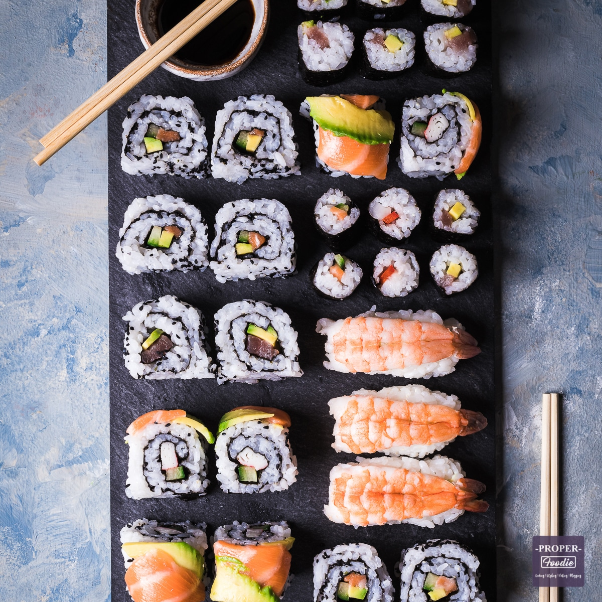

Sushi

Description
sushi, a staple rice dish of Japanese cuisine, consisting of cooked rice flavoured with vinegar and a variety of vegetable, egg, or raw seafood garnishes and served cold
Ingredients
- Rice
- Nori
- Raw salmon
- Avocado
Steps
- Place the seaweed on a bamboo mat, then cover the sheet of seaweed with an even layer of prepared sushi rice. Smooth gently with the rice paddle.
- Layer salmon, cream cheese, and avocado on the rice, and roll it up tightly. Slice with a sharp knife, and enjoy with soy sauce.